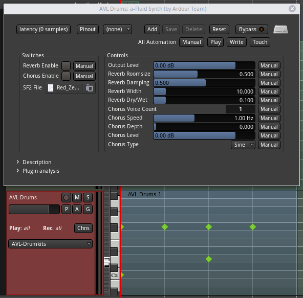
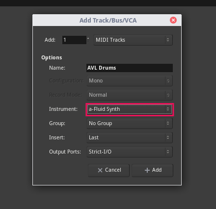
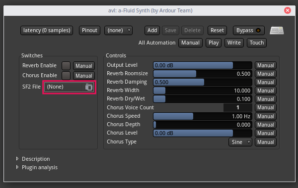
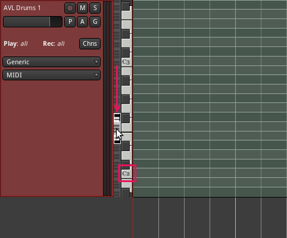
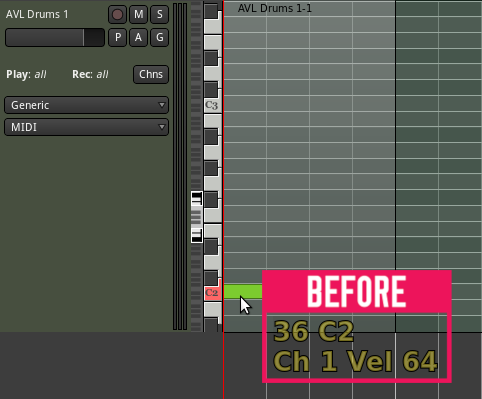
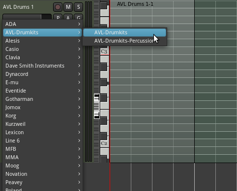
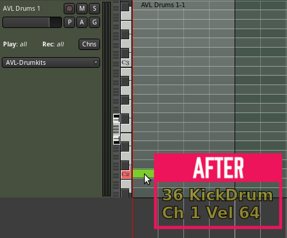
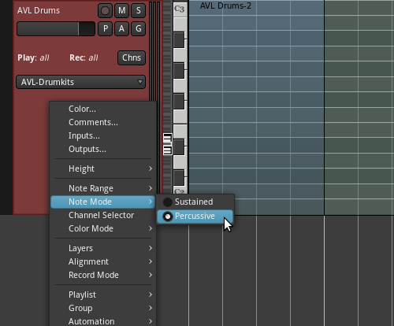
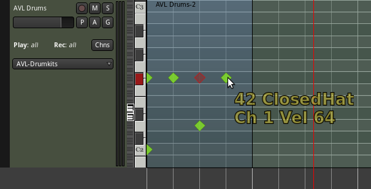

Using AVL drumkits with a-Fluid Synth in Ardour

In this tutorial I will show you how to use Glen MacArthur's fantastic AVL Drumkits sample pack with 'a-Fluid Synth', Ardour's built in FluidSynth plugin. I will also show you how to load midnam files to make it easier to do drum programming within the DAW.
Since version 5.4, Ardour now includes 'a-Fluid Synth', a soundfont plugin, and since version 1.1 of AVL Drumkits, the SF2 (soundfont) format is now included in the pack, so why not use them together?
Here's what you need for this tutorial -
- Ardour version 5.4 +
- AVL SF2 soundfonts 1.1 +
- AVL midnam file
Preparation
First of all we need to download the sample packs SF2 version, as well as the sample packs corresponding midnam files. Let's go to AVL Drumkits webpage and download from the following two links -

We want to put the soundfont in a permanent home, so let's create a folder for it in our home folder called 'sf2' and extract the drumkits into this newly created folder.
Next, we will put the midnam files into
Now we have everything prepared, let's load up Ardour and set up the rest there.
Setting up our track
In your Ardour session, add a new track by going to

First, we will load up the soundfont so open up 'a-Fluid Synth' by double clicking on it. Next click on the SF2 file loader and navigate to our SF2 drumkit file, in this case within the 'sf2' folder we just created in our home folder. For this example I will choose 'Red_Zeppelin_5-1.1.sf2'.

Left click and drag downwards on the zoom area of the piano keys so that we can see C2, the first note of this soundfont, and press on C2 on the piano keys.

If we did everything correctly, you will hear a kick drum.
Getting ready for programming our drum track
Now let's add a MIDI region and prepare to add some notes. Select the draw tool (shortcut d) and left click on our tracks timeline to add a region.
When we hover the draw tool into this region we see note values, which would be great if we were working with a synth but for our purpose, a read out of which keys correspond to which drum samples would be much better. This is where the midnam file comes in.

Click on the drop down menu labelled 'Generic' in our MIDI tracks header and navigate to

Now when we hover the draw tool around in the region, we will see a read out for each drum instrument in the soundfont.

Finally, right click on the track header and navigate to

And there you go, you're ready to start programming realistic drum tracks directly from within Ardour with no need to install any third party plugins.

Written by Conor Mc Cormack